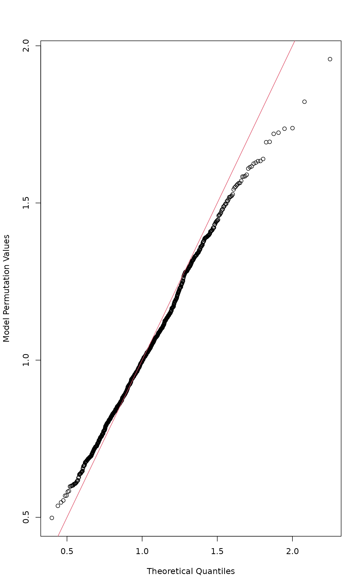

Permutation Test for Constrained Correspondence Analysis, Redundancy Analysis and Constrained Analysis of Principal Coordinates
anova.cca.RdThe function performs an ANOVA like permutation test for Constrained
Correspondence Analysis (cca), Redundancy Analysis
(rda) or distance-based Redundancy Analysis (dbRDA,
dbrda) to assess the significance of constraints.
Usage
# S3 method for class 'cca'
anova(object, ..., permutations = how(nperm=999),
by = NULL, model = c("reduced", "direct", "full"),
parallel = getOption("mc.cores"), strata = NULL,
cutoff = 1, scope = NULL, test = c("permutation", "F"))
# S3 method for class 'cca'
permutest(x, permutations = how(nperm = 99),
model = c("reduced", "direct", "full"), by = NULL, first = FALSE,
strata = NULL, parallel = getOption("mc.cores"), ...)Arguments
- object
One or several result objects from
cca,rda,dbrdaorcapscale. For a single object, a test specified inbyor an overall test is given. If there are several result objects, they should be nested, and they are compared against previous model in the order of nestedness.- x
A single ordination result object.
- permutations
a list of control values for the permutations as returned by the function
how, or the number of permutations required, or a permutation matrix where each row gives the permuted indices.- by
The default (
NULL) performs overall test for the model. Inpermutestandanovayou can setby = "term"for sequential test of terms (from first to last), andby = "onedf"for sequential test of one-degree-of-freedom contrasts of factor levels. Inanovayou can also setby = "margin"for marginal effecs of terms (each marginal term analysed in a model with all other variables), andby = "axis"for each constrained axis. Choices"terms"and"margin"can be used only with models fitted with formula.bycannot be used together withfirst = TRUE.- model
Permutation model:
model="direct"permutes community data,model="reduced"permutes residuals of the community data after Conditions (partial model),model = "full"permutes residuals after Conditions and Constraints.- parallel
Use parallel processing with the given number of cores.
- strata
An integer vector or factor specifying the strata for permutation. If supplied, observations are permuted only within the specified strata. It is an error to use this when
permutationsis a matrix, or ahowdefinesblocks. This is a legacy argument: it is better to usepermutations = how(..., blocks)instead.- cutoff
Only effective with
by="axis"where stops permutations after an axis equals or exceeds thecutoff\(p\)-value.- scope
Only effective with
by="margin"where it can be used to select the marginal terms for testing. The default is to test all marginal terms indrop.scope.- test
Test type, either permutation test or parametric \(F\)-test. Parametric test is only available for
rda. It is similar asanova.mlmtest = "Spherical"with Greenhouse-Geisser correction for asphericity.- first
Analyse only significance of the first axis.
- ...
Parameters passed to other functions.
anova.ccapasses all arguments topermutest.cca. Inanovawithby = "axis"you can use argumentcutoff(defaults1) which stops permutations after exceeding the given level.
Details
Functions anova.cca and permutest.cca implement ANOVA
like permutation tests for the joint effect of constraints in
cca, rda, dbrda or
capscale. Function anova is intended as a more
user-friendly alternative to permutest (that is the real
workhorse).
Function anova can analyse a sequence of constrained
ordination models. The analysis is based on the differences in
residual deviance in permutations of nested models.
The default test is for the sum of all constrained eigenvalues.
Setting first = TRUE will perform a test for the first
constrained eigenvalue. Argument first can be set either in
anova.cca or in permutest.cca. It is also possible to
perform significance tests for each axis or for each term
(constraining variable) using argument by in anova.cca.
Setting by = "axis" will perform separate significance tests
for each constrained axis (Legendre et al. 2011). You can
stop permutation tests after exceeding a given significance level with
argument cutoff to speed up calculations in large
models. Setting by = "terms" will perform separate significance
test for each term (constraining variable). The terms are assessed
sequentially from first to last, and the order of the terms will
influence their significances. Setting by = "onedf" will
perform a similar sequential test for one-degree-of-freedom effects,
where multi-level factors are split in their contrasts. Setting
by = "margin" will perform separate significance test for each
marginal term in a model with all other terms. The marginal test also
accepts a scope argument for the drop.scope which
can be a character vector of term labels that are analysed, or a
fitted model of lower scope. The marginal effects are also known as
“Type III” effects, but the current function only evaluates
marginal terms. It will, for instance, ignore main effects that are
included in interaction terms. In calculating pseudo-\(F\), all
terms are compared to the same residual of the full model.
Community data are permuted with choice model="direct", and
residuals after partial CCA/ RDA/ dbRDA with choice
model="reduced" (default). If there is no partial CCA/ RDA/
dbRDA stage, model="reduced" simply permutes the data and is
equivalent to model="direct". The test statistic is
“pseudo-\(F\)”, which is the ratio of constrained and
unconstrained total Inertia (Chi-squares, variances or something
similar), each divided by their respective degrees of freedom. If
there are no conditions (“partial” terms), the sum of all
eigenvalues remains constant, so that pseudo-\(F\) and eigenvalues
would give equal results. In partial CCA/ RDA/ dbRDA, the effect of
conditioning variables (“covariables”) is removed before
permutation, and the total Chi-square is not fixed, and test based on
pseudo-\(F\) would differ from the test based on plain
eigenvalues.
Function can also perform parametric \(F\)-test on
rda models. This test is similar to test =
"Spherical" in anova.mlm. The test uses the tabulated
\(F\)-values but multiplies the degrees of freedom with number of
variables (species, columns) times correction factor epsilon, using
Greenhouse-Geisser correction for asphericity. Preliminary tests
indicate that this test is often consistent with permutation tests
in rda (but not in cca and cannot be
used with distance-based methods). However, if you use this test, it
is best to check that it gives consistent results with permutation
tests (see Examples).
Value
The function anova.cca calls permutest.cca and fills an
anova table. Additional attributes are
Random.seed (the random seeds used),
control (the permutation design, see how) and
F.perm (the permuted test statistics).
References
Legendre, P. and Legendre, L. (2012). Numerical Ecology. 3rd English ed. Elsevier.
Legendre, P., Oksanen, J. and ter Braak, C.J.F. (2011). Testing the significance of canonical axes in redundancy analysis. Methods in Ecology and Evolution 2, 269–277.
See also
cca, rda, dbrda to
get something to analyse. Function adonis2 is similar
to anova of a dbrda result. Function
drop1.cca calls anova.cca with by =
"margin", and add1.cca an analysis for single terms
additions, which can be used in automatic or semiautomatic model
building (see ordistep). Function
permustats extracts
permutation results for further analysis.
Examples
data(dune, dune.env)
mod <- cca(dune ~ Moisture + Management, dune.env)
## overall test
anova(mod)
#> Permutation test for cca under reduced model
#> Permutation: free
#> Number of permutations: 999
#>
#> Model: cca(formula = dune ~ Moisture + Management, data = dune.env)
#> Df ChiSquare F Pr(>F)
#> Model 6 1.0024 1.9515 0.003 **
#> Residual 13 1.1129
#> ---
#> Signif. codes: 0 ‘***’ 0.001 ‘**’ 0.01 ‘*’ 0.05 ‘.’ 0.1 ‘ ’ 1
## tests for individual terms and contrasts
anova(mod, by = "term")
#> Permutation test for cca under reduced model
#> Terms added sequentially (first to last)
#> Permutation: free
#> Number of permutations: 999
#>
#> Model: cca(formula = dune ~ Moisture + Management, data = dune.env)
#> Df ChiSquare F Pr(>F)
#> Moisture 3 0.62831 2.4465 0.001 ***
#> Management 3 0.37407 1.4565 0.049 *
#> Residual 13 1.11289
#> ---
#> Signif. codes: 0 ‘***’ 0.001 ‘**’ 0.01 ‘*’ 0.05 ‘.’ 0.1 ‘ ’ 1
anova(mod, by = "margin")
#> Permutation test for cca under reduced model
#> Marginal effects of terms
#> Permutation: free
#> Number of permutations: 999
#>
#> Model: cca(formula = dune ~ Moisture + Management, data = dune.env)
#> Df ChiSquare F Pr(>F)
#> Moisture 3 0.39854 1.5518 0.036 *
#> Management 3 0.37407 1.4565 0.053 .
#> Residual 13 1.11289
#> ---
#> Signif. codes: 0 ‘***’ 0.001 ‘**’ 0.01 ‘*’ 0.05 ‘.’ 0.1 ‘ ’ 1
anova(mod, by = "onedf")
#> Permutation test for cca under reduced model
#> Sequential test for contrasts
#> Permutation: free
#> Number of permutations: 999
#>
#> Model: cca(formula = dune ~ Moisture + Management, data = dune.env)
#> Df ChiSquare F Pr(>F)
#> Moisture.L 1 0.41081 4.7988 0.001 ***
#> Moisture.Q 1 0.11261 1.3154 0.167
#> Moisture.C 1 0.10489 1.2253 0.226
#> ManagementHF 1 0.08849 1.0337 0.359
#> ManagementNM 1 0.20326 2.3744 0.011 *
#> ManagementSF 1 0.08231 0.9615 0.455
#> Residual 13 1.11289
#> ---
#> Signif. codes: 0 ‘***’ 0.001 ‘**’ 0.01 ‘*’ 0.05 ‘.’ 0.1 ‘ ’ 1
## compare several models in succession
mod0 <- cca(dune ~ 1, dune.env)
mod1 <- cca(dune ~ Moisture + A1, dune.env)
mod2 <- update(mod1, . ~ . + Management + Manure, dune.env)
#>
#> Some constraints or conditions were aliased because they were redundant. This
#> can happen if terms are constant or linearly dependent (collinear): ‘Manure^4’
anova(mod0, mod1, mod2)
#> Permutation tests for cca under reduced model
#> Permutation: free
#> Number of permutations: 999
#>
#> Model 1: dune ~ 1
#> Model 2: dune ~ Moisture + A1
#> Model 3: dune ~ Moisture + A1 + Management + Manure
#> ResDf ResChiSquare Df ChiSquare F Pr(>F)
#> 1 19 2.1153
#> 2 15 1.3715 4 0.74374 2.2546 0.003 **
#> 3 9 0.7422 6 0.62933 1.2719 0.105
#> ---
#> Signif. codes: 0 ‘***’ 0.001 ‘**’ 0.01 ‘*’ 0.05 ‘.’ 0.1 ‘ ’ 1
## See that permutation and F-distribution are consistent
mod <- rda(dune ~ Moisture + Management, dune.env)
(ano <- anova(mod))
#> Permutation test for rda under reduced model
#> Permutation: free
#> Number of permutations: 999
#>
#> Model: rda(formula = dune ~ Moisture + Management, data = dune.env)
#> Df Variance F Pr(>F)
#> Model 6 46.425 2.6682 0.001 ***
#> Residual 13 37.699
#> ---
#> Signif. codes: 0 ‘***’ 0.001 ‘**’ 0.01 ‘*’ 0.05 ‘.’ 0.1 ‘ ’ 1
anova(mod, test = "F")
#> Parametric F-test for rda
#> Greenhouse-Geisser epsilon: 0.245
#>
#> Model: rda(formula = dune ~ Moisture + Management, data = dune.env)
#> Df Variance F Pr(>F)
#> Model 6 46.425 2.6682 3.256e-05 ***
#> Residual 13 37.699
#> ---
#> Signif. codes: 0 ‘***’ 0.001 ‘**’ 0.01 ‘*’ 0.05 ‘.’ 0.1 ‘ ’ 1
## adjustment for degrees of freedom in F distribution
adj <- ncol(dune) * 0.245 # Greenhouse-Geisser epsilon
qqnorm(permustats(ano), x = qf(ppoints(999), 6*adj, 13*adj, lower.tail=FALSE),
observed = FALSE)
abline(0, 1, col = 2) # line of equality
